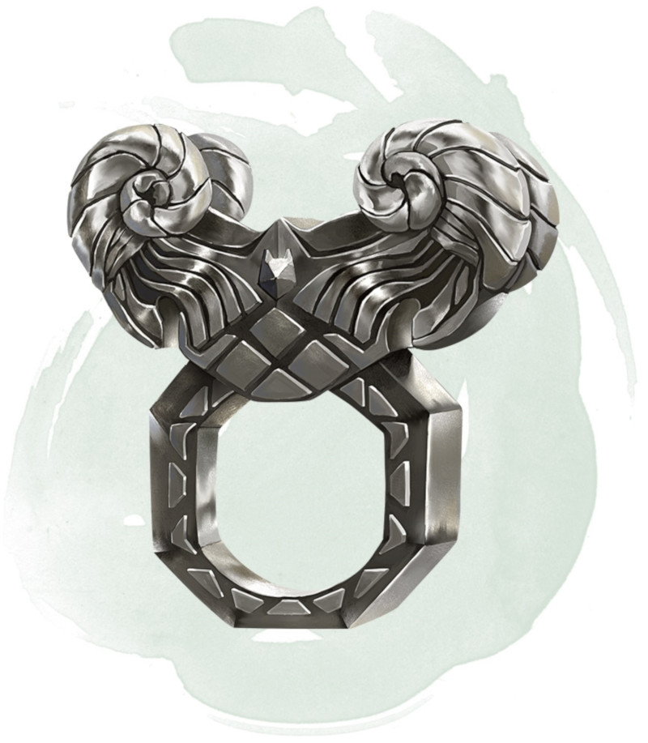

Anneau du bélier
[ Ring of the Ram ]
Anneau, rare (nécessite un lien)
Cet anneau possède 3 charges, et il récupère 1d3 charges dépensées chaque jour à l'aube. Tant que vous êtes équipé de cet anneau, vous pouvez utiliser une action pour dépenser 1 à 3 de ses charges pour effectuer une attaque à distance avec un sort contre une créature que vous pouvez voir et qui se trouve à 18 mètres ou moins de vous. L'anneau fait apparaître la tête d'un bélier fantomatique et effectue son jet d'attaque avec un bonus de +7. Si le coup touche, pour chaque charge que vous avez dépensée, la cible subit 2d10 dégâts de force et est repoussée de vous sur 1,50 mètre.
Sinon, vous pouvez dépenser 1 à 3 des charges de l'anneau en utilisant une action pour tenter de briser un objet que vous pouvez voir, se trouvant à 18 mètres de vous maximum, et qui n'est ni porté ni transporté. L'anneau effectue un jet de Force avec un bonus de +5 pour chaque charge que vous avez dépensée.
Sinon, vous pouvez dépenser 1 à 3 des charges de l'anneau en utilisant une action pour tenter de briser un objet que vous pouvez voir, se trouvant à 18 mètres de vous maximum, et qui n'est ni porté ni transporté. L'anneau effectue un jet de Force avec un bonus de +5 pour chaque charge que vous avez dépensée.
Dungeon Master´s Guide (SRD)
